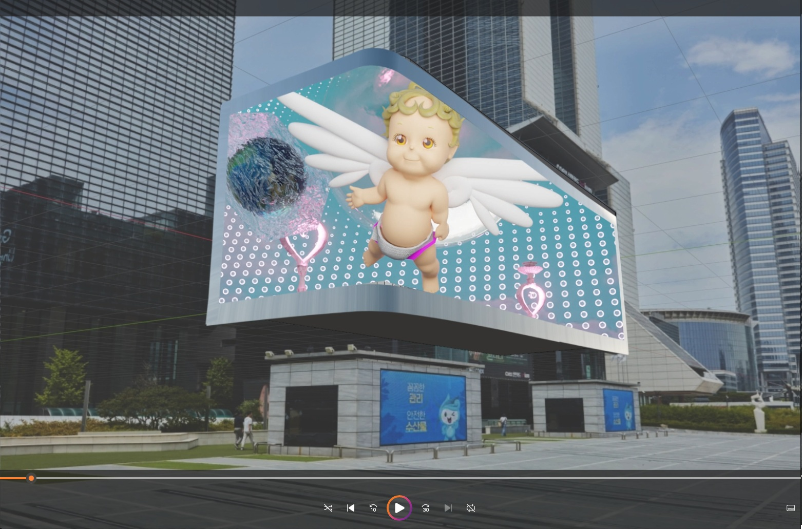

TouchDesginer-based Interactive/ Generative Media Artist
감정과 서사적 사고를 바탕으로 시각과 소리를 결합하여 관객의 몰입을 이끌어내는 경험을 추구합니다. 시각과 사운드를 유기적으로 설계하며, 다양한 미디어를 통해감각적이고 몰입도 높은 경험을 만들어내고자 합니다.

Blender 3D 애니메이션과 Logic Pro로 제작한 사운드 트랙을 결합한 입체 미디어아트 작품입니다.
TouchDesigner를 활용하여 오디오 신호에 실시간으로 반응하는 비주얼 아트를 연출했습니다.
공연 및 전시 공간을 위한 다채널 이머시브 오디오 음향 디자인 작업입니다.
협업 및 작업 문의는 아래 이메일로 연락주세요.
nojam5jam@naver.com